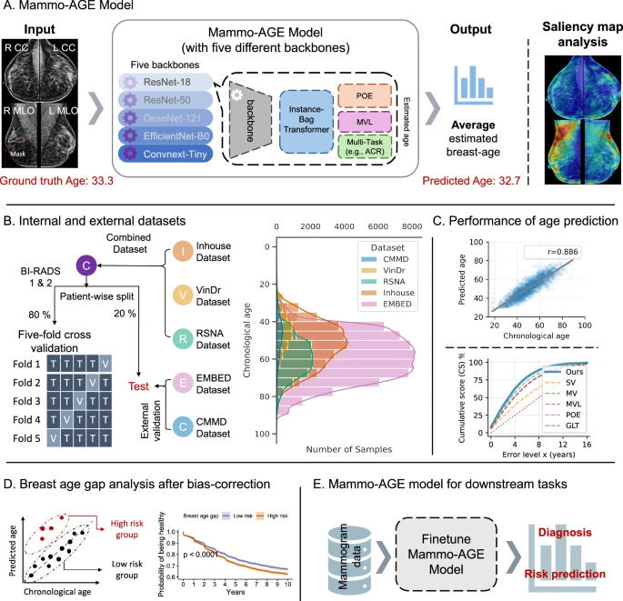

Recently, the Intelligent Medical Computing Laboratory at Macao Polytechnic University has published its latest research, Mammo-AGE: deep learning estimation of breast age from mammograms, in Nature Communications (IF=15.7). This marks a significant breakthrough at the international frontier of intelligent medical imaging analysis and early tumor screening.

Core Innovation: AI-driven “Breast Age Clock”
Addressing clinical needs in breast health assessment and early screening for breast cancer, this work proposes the Mammo-AGE deep learning model and achieves three key advances:
- Accurate, non-invasive breast age estimation
Using only routine four-view mammograms (bilateral CC and MLO) without additional clinical data, the model precisely infers biological breast age. It integrates multi-view fusion and ensemble learning: an Instance-Bag Transformer aggregates aging features across views; five mainstream backbones (including ResNet-18 and EfficientNet-B0) are ensembled; multi-task learning with breast density prediction and a composite loss (POE and MVL) ensures physiologically coherent aging patterns. Trained and externally validated on five large global datasets (95,826 images; women aged 18–98), Mammo-AGE achieves a mean absolute error of 4.2–6.1 years and a correlation with chronological age up to 0.89, demonstrating strong stability and generalization. - Interpretable health risk biomarker
The bias-corrected Breast Age Gap (estimated age minus chronological age) serves as a novel biomarker of breast health. Findings show breast cancer patients have significantly higher age gaps than healthy controls; each 1-year increase in age gap raises future cancer risk by 1.3%–2.2%. Longitudinal validation indicates lower health probability in high-gap populations (log-rank test p<0.0001). Occlusion sensitivity analysis produces saliency maps focusing on glandular tissue, vasculature, and skin thickness—making AI decisions visible and interpretable. - Clinical translation across scenarios
After fine-tuning, the model performs strongly in diagnosis and short-/long-term risk prediction. On internal and external datasets (including CSAW-CC and CMMD), AUPRC and AUROC outperform mainstream methods, remaining efficient even in limited data settings. Compared to DNA methylation clocks requiring tissue/blood samples, Mammo-AGE leverages routine screening images—non-invasive, low-cost, and easily scalable—integrating directly into current workflows to quantify high-risk identification and personalize screening intervals.
Publication
Looking ahead, our laboratory will continue to advance the clinical deployment of Mammo-AGE, further explore the relationship between breast aging and other breast diseases, and expand AI applications in multi-organ imaging analysis and precision oncology.